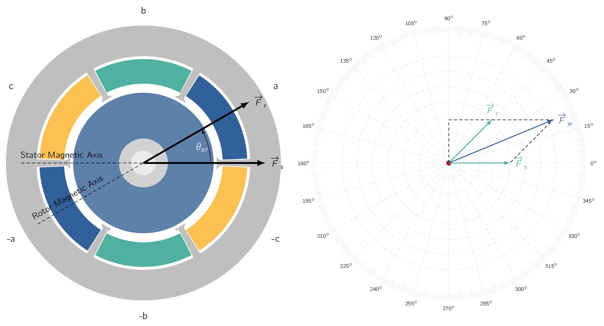

The behavior of any electromagnetic device as a component in an electromechanical system can be described in terms of:
-
its electrical-terminal equations, and
-
its displacement and electromechanical force or torque.
The purpose of this section is to derive the terminal relationships and torque equations for an idealized elementary rotating machine, results which can be readily extended later to more complex machines.
We derive these equations from two viewpoints and show their equality.
The first viewpoint is essentially the same as we discussed in Electromechanic Energy Conversion. The machine will be regarded as a circuit element whose inductances depend on the angular position () of the rotor. The flux linkages () and magnetic field co-energy will be expressed in terms of the currents and inductances. The torque can then be found from the partial derivative of the co-energy with respect to the rotor position and the terminal voltages from the sum of the resistance drops and the Faraday’s law voltages .
The result will be a set of non-linear differential equations describing the dynamic performance of the machine.
The second viewpoint regards the machine as two groups of windings producing magnetic flux in the air gap, one group on the stator, and the other on the rotor. By making suitable assumptions regarding these fields, [95] similar to those used to derive analytic expressions for the inductances. simple expressions can be derived for the flux linkages and the coenergy in the air gap in terms of the field quantities.
The torque and generated voltage can then be found from these expressions.
In this fashion, torque can be expressed explicitly as the tendency of two (2) magnetic fields [96] Which are stator and rotor fields. to align, in the same way that permanent magnets tend to align, and generated voltage can be expressed in terms of the relative motion between a field and a winding. [97] These expressions lead to a simple physical picture of the normal steady-state behavior of rotating machines.
Consider an elementary smooth-air-gap machine shown in Fig. 4.19a.
Here with one winding on the stator and one on the rotor and with being the mechanical angle between the axes of the two (2) windings.
These windings are distributed over a number of slots so that their MMFMagneto-motive ForceThe magnetic pressure which drives magnetic flux in a magnetic circuit, and is the work done to move a unit magnetic pole. waves can be approximated by space sinusoids.
We assume, for simplicity, the stator and rotor are concentric cylinders and slot openings are neglected. Consequently, our elementary model does not include the effects of salient poles. [98] Which are covered in M.Sc Drive Systems. We also assume, the reluctances of the stator and rotor iron are assumed negligible.
Finally, although Fig. 4.19a shows a two-pole machine, we will write the derivations that follow for the general case of a multi-pole machine, replacing by the electrical rotor angle
| (4.44) |
Based upon these assumptions, the stator and rotor self-inductances and can be seen to be constant, but the stator-to-rotor mutual inductance depends on the electrical angle () between the magnetic axes of the stator and rotor windings. The mutual inductance is at its positive maximum when or , is zero (0) when , and is at its negative maximum when .
On the assumption of sinusoidal MMFMagneto-motive ForceThe magnetic pressure which drives magnetic flux in a magnetic circuit, and is the work done to move a unit magnetic pole. waves and a uniform air gap, the space distribution of the air-gap flux wave is sinusoidal, and the mutual inductance will be of the form:
| (4.45) |
where the script letter denotes an inductance which is a function of the electrical angle . Here the italic capital letter L denotes a constant value. Therefore is the magnitude of the mutual inductance; its value when the magnetic axes of the stator and rotor are aligned (). In terms of the inductances, the stator and rotor flux linkages and are
In matrix notation, we can write the aforementioned equations as:
| (4.48) |
The terminal voltages () are:
where and are the resistances of the stator and rotor windings respectively.
When the rotor is revolving, varies with time.
Differentiation of Eq. (4.46) and Eq. (4.47) and substitution of the results in Eq. (4.49) and Eq. (4.50) then give:
where
| (4.53) |
is the instantaneous speed in electrical radians per second. In a two-pole machine, [99] such as that of Fig. 4.19a. and are equal to the instantaneous shaft angle and the shaft speed respectively.
The second and third terms on the right-hand sides of Eq. (4.51) and Eq. (4.52) are induced voltages like those induced in stationary coupled circuits such as the windings of transformers. The fourth terms are caused by mechanical motion and are proportional to the instantaneous speed.
These are the speed voltage terms which are associated with the interchange of power between the electric and mechanical systems.
The electromechanical torque can be found from the co-energy. From Eq. (3.63) :
Please observe here, the co-energy of Eq. (4.54) has been expressed specifically in terms of the shaft angle () because the torque expression of Eq. (3.61) requires that the torque be obtained from the derivative of the coenergy with respect to the spatial angle and not with respect to the electrical angle .
Therefore, from Eq. (3.61) :
where is the electromechanical torque acting to accelerate the rotor. [100] i.e., a positive torque acts to increase The negative sign in Eq. (4.56) means that the electromechanical torque acts in the direction to bring the magnetic fields of the stator and rotor into alignment. Eq. (4.51) , Eq. (4.52) , and Eq. (4.56) are a set of three equations relating the electrical variables , , , and the mechanical variables and .
These equations, together with the constraints imposed on the electrical variables by the networks connected to the terminals [101] sources or loads and external impedances. and the constraints imposed on the rotor, [102] applied torques and inertial, frictional, and spring torques. determine the performance of the device and its characteristics as an energy-conversion device between the external electrical and mechanical systems. These are non-linear differential equations and are difficult to solve except under special circumstances. We are not specifically concerned with their solution here but rather using them merely as steps in the development of the theory of rotating machines.
However, these equations will pop-up again in M.Sc Drive Systems to get a better understanding of machine performance and simulation of transient behaviour.
Now consider a uniform-air-gap machine with several stator and rotor windings. The same general principles that apply to the elementary model of Fig. 4.19a also apply to the multi-winding machine.
Each winding has its own self inductance as well as mutual inductances with other windings. The self inductances and mutual inductances between pairs of windings on the same side of the air gap are constant on the assumption of a uniform gap and negligible magnetic saturation. However, the mutual inductances between pairs of stator and rotor windings vary as the cosine of the angle between their magnetic axes. Torque results from the tendency of the magnetic field of the rotor windings to line up with that of the stator windings.
It can be expressed as the sum of terms like that of Eq. (4.56) .
As we have seen from the above example, under balanced conditions, a four-pole SynMSynchronous Machinean AC electrical device which operates at a constant synchronous speed, serving as either a synchronous generator (alternator) or a synchronous motor. It features a stationary stator with three-phase windings and a rotating rotor excited by direct current (DC) or permanent magnets. will produce constant torque at a rotational angular velocity equal to half of the electrical excitation frequency. This result can be generalized to show that, under balanced operating conditions, a multi-phase, multi-pole SynMSynchronous Machinean AC electrical device which operates at a constant synchronous speed, serving as either a synchronous generator (alternator) or a synchronous motor. It features a stationary stator with three-phase windings and a rotating rotor excited by direct current (DC) or permanent magnets. will produce constant torque at a rotor speed, at which the rotor rotates in synchronism with the rotating flux wave produced by the stator currents. Therefore, this is known as the synchronous speed of the machine. From Eq. (4.34) and Eq. (4.35) , the synchronous speed is equal to:
| (4.57) |
In this part, we will explore an alternative formulation in terms of the interacting magnetic fields.

As we have seen, currents in the rotor and stator windings each produce their own MMFMagneto-motive ForceThe magnetic pressure which drives magnetic flux in a magnetic circuit, and is the work done to move a unit magnetic pole. distributions which in turn produce their own magnetic fields in the machine. The rotor and stator MMFMagneto-motive ForceThe magnetic pressure which drives magnetic flux in a magnetic circuit, and is the work done to move a unit magnetic pole. waves are shown schematically in Fig. 4.19a for a two-pole machine with a smooth air gap.
Torque is produced by the tendency of rotor and stator magnetic fields to align their magnetic axes.
In the machine of shown in Fig. 4.19a, the torque is proportional to the product of the amplitudes of the stator and rotor MMFMagneto-motive ForceThe magnetic pressure which drives magnetic flux in a magnetic circuit, and is the work done to move a unit magnetic pole. waves and is also a function of the angle () measured from the axis of the stator MMFMagneto-motive ForceThe magnetic pressure which drives magnetic flux in a magnetic circuit, and is the work done to move a unit magnetic pole. wave to that of the rotor.
In fact, we will see, for a smooth-air-gap machine, the torque is proportional to .
In a typical machine, most of the flux produced by the stator and rotor windings crosses the air gap and links both windings which is termed the mutual flux. [103] This is directly analogous to the mutual or magnetizing flux in a transformer. However, some of the flux produced by the rotor and stator windings does NOT cross the air gap, which is analogous to the leakage flux in a transformer, are referred to as the rotor leakage flux and the stator leakage flux.
Components of this leakage flux include slot and tooth-tip leakage, end-turn leakage, and space harmonics in the air-gap field.
Only the mutual flux is of direct concern in torque production. The leakage fluxes do affect machine performance however, by virtue of the voltages they induce in their respective windings. Their effect on the electrical characteristics is accounted for by means of leakage inductances, analogous to the use of inclusion of leakage inductances in the transformer models.
When expressing torque in terms of the winding currents or their resultant MMFMagneto-motive ForceThe magnetic pressure which drives magnetic flux in a magnetic circuit, and is the work done to move a unit magnetic pole.s, the resulting expressions do NOT include terms containing the leakage inductances.
Our analysis here, then, will be in terms of the resultant mutual flux. We will derive an expression for the magnetic co-energy stored in the air gap in terms of the stator and rotor MMFMagneto-motive ForceThe magnetic pressure which drives magnetic flux in a magnetic circuit, and is the work done to move a unit magnetic pole.s and the angle () between their magnetic axes. The torque can then be found from the partial derivative of the co-energy with respect to angle . For analytical simplicity, we will assume the radial length of the air gap [104] the radial clearance between the rotor and stator () is small compared with the radius of the rotor or stator.
The air-gap field then can be represented as a radial field or whose intensity varies with the angle around the periphery. The line integral of across the gap then is simply and equal to the resultant air-gap MMFMagneto-motive ForceThe magnetic pressure which drives magnetic flux in a magnetic circuit, and is the work done to move a unit magnetic pole. produced by the stator and rotor windings, which means we can write:
| (4.58) |
where denotes the MMFMagneto-motive ForceThe magnetic pressure which drives magnetic flux in a magnetic circuit, and is the work done to move a unit magnetic pole. wave as a function of the angle around the periphery. The MMFMagneto-motive ForceThe magnetic pressure which drives magnetic flux in a magnetic circuit, and is the work done to move a unit magnetic pole. waves of both stator and rotor are spatial sine waves with being the phase angle between their magnetic axes in electrical degrees. They can be represented by the space vectors and drawn along the magnetic axes of the stator- and rotor MMFMagneto-motive ForceThe magnetic pressure which drives magnetic flux in a magnetic circuit, and is the work done to move a unit magnetic pole. waves respectively, as in Fig. 4.19b. The resultant MMFMagneto-motive ForceThe magnetic pressure which drives magnetic flux in a magnetic circuit, and is the work done to move a unit magnetic pole. acting to produce flux across the air gap is their vector sum and is represented by the space vector . From the trigonometric formula for the diagonal of a parallelogram, its peak value is found from:
| (4.59) |
in which the are the peak values of the MMFMagneto-motive ForceThe magnetic pressure which drives magnetic flux in a magnetic circuit, and is the work done to move a unit magnetic pole. waves. The resultant radial field is a sinusoidal space wave whose peak value is, from Eq. (4.58) ,
| (4.60) |
Now, let us, consider the magnetic field co-energy stored in the air gap. The coenergy density at a point where the magnetic field intensity () is calculated as . Therefore, the co-energy density averaged over the volume of the air gap is times the average value of .
The average value of the square of a sine wave is half its peak value, which makes:
| (4.61) |
Based upon the small-gap approximation, [105] A method of simplification used if the two diameters of a co-axial cylinder have negligible difference. the volume of the air gap is given by:
where is the axial length of the air gap and is its average diameter. The total co-energy can be found by multiplying the average coenergy density by the air-gap volume
| (4.62) |
From Eq. (4.59) the coenergy stored in the air gap can now be expressed in terms of the peak amplitudes of the stator- and rotor-MMFMagneto-motive ForceThe magnetic pressure which drives magnetic flux in a magnetic circuit, and is the work done to move a unit magnetic pole. waves and the space-phase angle between them. This allows us to write the following:
| (4.63) |
Recognizing that holding MMFMagneto-motive ForceThe magnetic pressure which drives magnetic flux in a magnetic circuit, and is the work done to move a unit magnetic pole. constant is equivalent to holding current constant, an expression for the electromechanical torque can now be obtained in terms of the interacting magnetic fields by taking the partial derivative of the field coenergy with respect to angle. For a two-pole machine
| (4.64) |
The general expression for the torque for a multi-pole machine is
| (4.65) |
In this equation, is the electrical space-phase angle between the rotor and stator MMFMagneto-motive ForceThe magnetic pressure which drives magnetic flux in a magnetic circuit, and is the work done to move a unit magnetic pole. waves and the torque acts in the direction to accelerate the rotor. Therefore when is negative, the torque is positive [106] acting in a direction to accelerate the rotor and the machine is operating as a motor. Similarly, a positive corresponds to negative torque tending to de-accelerate the rotor as is the case when the machine is operating as a generator.
This important equation states the torque is proportional to the peak values of the stator- and rotor-MMFMagneto-motive ForceThe magnetic pressure which drives magnetic flux in a magnetic circuit, and is the work done to move a unit magnetic pole. waves (, ) and to the sine of the electrical space-phase angle between them. Equal and opposite torques are exerted on the stator and rotor.
The minus sign means that the fields tend to align themselves.
One can now compare the results of Eq. (4.65) with that of Eq. (4.56) . Recognizing is proportional to and is proportional to , one sees that they are similar in form. In fact, they must be equal.
These results have been derived with the assumption that the iron reluctance is negligible. However, the two techniques are equally valid for finite iron permeability.
On referring to Fig. 4.19b, we can see is the component of the wave in electrical space quadrature with the wave. Similarly is the component of the wave in quadrature with the wave. Thus, the torque is proportional to the product of one magnetic field and the component of the other in quadrature with it, much like the cross product of vector analysis. Also note that in Fig. 4.19b:
where, as seen in Fig. 4.19, is the angle measured from the axis of the resultant MMFMagneto-motive ForceThe magnetic pressure which drives magnetic flux in a magnetic circuit, and is the work done to move a unit magnetic pole. wave to the axis of the rotor MMFMagneto-motive ForceThe magnetic pressure which drives magnetic flux in a magnetic circuit, and is the work done to move a unit magnetic pole. wave. Similarly, is the angle measured from the axis of the stator MMFMagneto-motive ForceThe magnetic pressure which drives magnetic flux in a magnetic circuit, and is the work done to move a unit magnetic pole. wave to the axis of the resultant MMFMagneto-motive ForceThe magnetic pressure which drives magnetic flux in a magnetic circuit, and is the work done to move a unit magnetic pole. wave. The torque, acting to accelerate the rotor, can then be expressed in terms of the resultant MMFMagneto-motive ForceThe magnetic pressure which drives magnetic flux in a magnetic circuit, and is the work done to move a unit magnetic pole. wave by substitution of either Eq. (4.66) or Eq. (4.67) in Eq. (4.65) . Writing these substitutions down, we get:
Comparison of Eq. (4.65) , Eq. (4.68) , and Eq. (4.69) shows the torque can be expressed in terms of the component magnetic fields due to each current acting alone, as in Eq. (4.65) , or in terms of the resultant field and either of the components, as in Eq. (4.68) and Eq. (4.69) , provided that we use the corresponding angle between the axes of the fields. [107] Ability to reason in any of these terms is a convenience in machine analysis.
In Eq. (4.65) , Eq. (4.68) , and Eq. (4.69) , the fields have been expressed in terms of the peak values of their MMFMagneto-motive ForceThe magnetic pressure which drives magnetic flux in a magnetic circuit, and is the work done to move a unit magnetic pole. waves. When magnetic saturation is neglected, the fields can, of course, be expressed in terms of the peak values of their flux-density waves or in terms of total flux per pole. Therefore, the peak value of the field due to a sinusoidally distributed MMFMagneto-motive ForceThe magnetic pressure which drives magnetic flux in a magnetic circuit, and is the work done to move a unit magnetic pole. wave in a uniform-air-gap machine is , where is the peak value of the MMFMagneto-motive ForceThe magnetic pressure which drives magnetic flux in a magnetic circuit, and is the work done to move a unit magnetic pole. wave.
Therefore, and substitution in Eq. (4.69) gives
| (4.70) |
One of the inherent limitations in the design of electromagnetic apparatus is the saturation flux density of magnetic materials. Due to saturation in the armature teeth the peak value of the resultant flux-density wave in the air gap is limited to about 1.5 to 2.0 T. The maximum permissible value of the winding current, and hence the corresponding MMFMagneto-motive ForceThe magnetic pressure which drives magnetic flux in a magnetic circuit, and is the work done to move a unit magnetic pole. wave, is limited by the temperature rise of the winding and other design requirements. Because the resultant flux density and MMFMagneto-motive ForceThe magnetic pressure which drives magnetic flux in a magnetic circuit, and is the work done to move a unit magnetic pole. appear explicitly in Eq. (4.70) , this equation is in a convenient form for design purposes and can be used to estimate the maximum torque which can be obtained from a machine of a given size.
An , four-pole, SynMSynchronous Machinean AC electrical device which operates at a constant synchronous speed, serving as either a synchronous generator (alternator) or a synchronous motor. It features a stationary stator with three-phase windings and a rotating rotor excited by direct current (DC) or permanent magnets. has an air-gap length of . The average diameter of the air-gap is , and its axial length is . The rotor winding has 786 turns and a winding factor () of 0.976. Assuming that thermal considerations limit the rotor current to , please estimate the maximum torque and power output one can expect to obtain from this machine.
First, we can determine the maximum rotor mmf from Eq. (4.9)
Assuming the peak value of the resultant air-gap flux is limited to , we can estimate the maximum torque from Eq. (4.70) by setting equal to (recognising negative values of , with the rotor MMF lagging the resultant MMF, correspond to positive, motoring torque).
For a synchronous speed of :
and therefore the corresponding power can be calculated as:
Alternative forms of the torque equation arise when it is recognized that the resultant flux per pole is
| (4.71) |
and the average value of a sinusoid over one-half wavelength is times its peak value, which means
| (4.72) |
where is the peak value of the corresponding flux-density wave.
For example, using the peak value of the resultant flux and substitution of Eq. (4.72) into Eq. (4.70) gives
| (4.73) |
where is the resultant flux per pole produced by the combined effect of the stator and rotor MMFMagneto-motive ForceThe magnetic pressure which drives magnetic flux in a magnetic circuit, and is the work done to move a unit magnetic pole.s. To tie this section in a nice bow, we now have several forms in which the torque of a uniformair-gap machine can be expressed in terms of its magnetic fields.
All are merely statements that the torque is proportional to the product of the magnitudes of the interacting fields and to the sine of the electrical space angle between their magnetic axes.
The negative sign indicates that the electromechanical torque acts in a direction to decrease the displacement angle between the fields. In our preliminary discussion of machine types, Eq. (4.73) will be the preferred form.
One further remark can be made concerning the torque equations and the thought process leading to them. There was no restriction in the derivation that the MMFMagneto-motive ForceThe magnetic pressure which drives magnetic flux in a magnetic circuit, and is the work done to move a unit magnetic pole. wave or flux-density wave remain stationary in space. They may remain stationary, or they may be traveling waves. As we have seen, if the magnetic fields of the stator and rotor are constant in amplitude and travel around the air gap at the same speed, a steady torque will be produced by the tendency of the stator and rotor fields to align themselves in accordance with the torque equations.
-
¶
- SynMSynchronous Machine
an AC electrical device which operates at a constant synchronous speed, serving as either a synchronous generator (alternator) or a synchronous motor. It features a stationary stator with three-phase windings and a rotating rotor excited by direct current (DC) or permanent magnets.
-
¶
- MMFMagneto-motive Force
The magnetic pressure which drives magnetic flux in a magnetic circuit, and is the work done to move a unit magnetic pole.